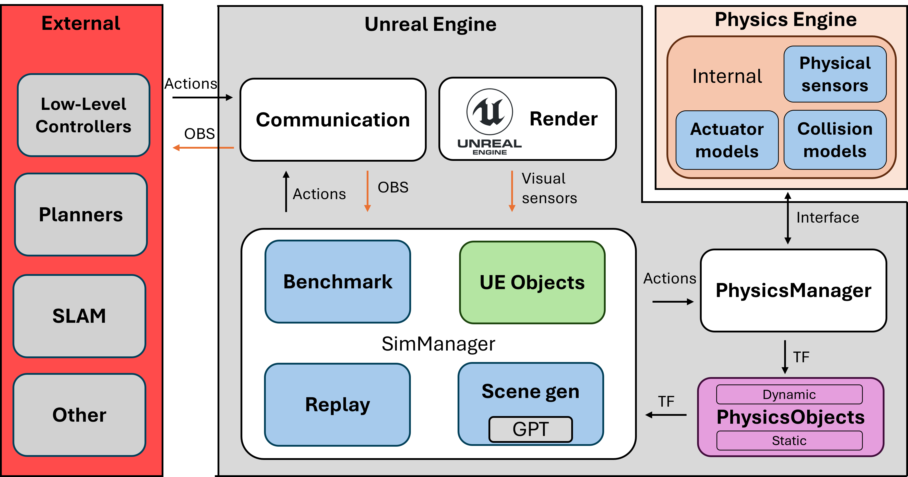
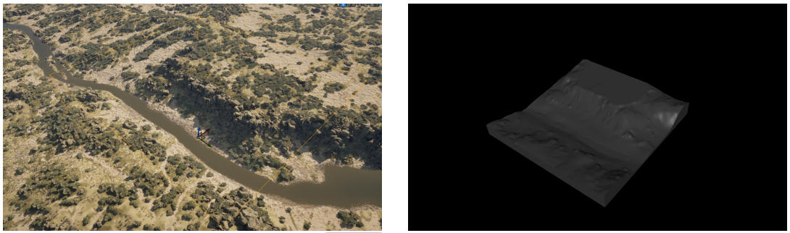
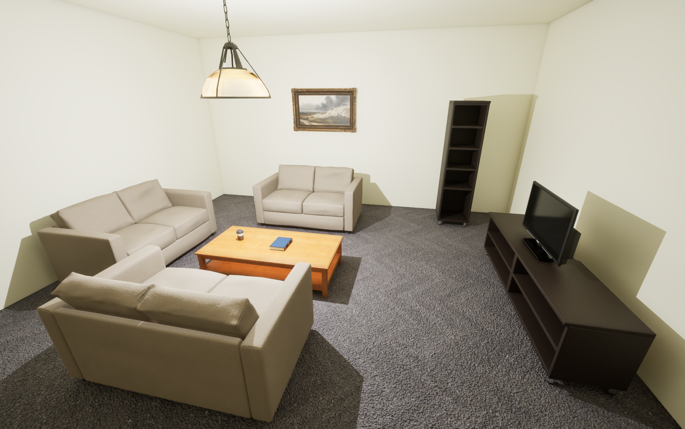

虚幻机器人实验室：一款具备先进物理和渲染技术的高保真机器人模拟器
概述
该模拟器（URL）集成了 MuJoCo 和虚幻引擎，提供了一个能够高度模拟真实世界交互的综合仿真环境。只需添加相应的 MuJoCo XML 描述和相关的虚幻引擎资源，即可轻松集成机器人。该系统支持标准机器人配置和传感器，包括相机、惯性测量单元 (IMU) 和力传感器，确保了广泛的兼容性。整个系统如下图所示。该系统由外部组件和内部模拟器组成。系统包含一个模块化的模拟管理器（SimManager），用于管理由基准测试 (Benchmark)、回放 (Replay) 和场景生成 (SceneGen) 模块组成的子模块。它管理所有对虚幻引擎数据的引用，并以虚幻引擎插件的形式开发，可以添加到任何项目中。

在通信方面，该模拟器利用 ROS 实现与现有机器人框架的无缝交互。此外，我们正在探索通过 ZeroMQ 1 实现更快速的自定义通信方法，以提高实时性能。我们将仿真环境视为真实世界的替代，从而有助于在真实场景中测试和验证机器人行为和感知系统。
物理管理器
我们的系统将 MuJoCo 和 CoACD 2 集成到虚幻引擎 (UE) 中，以实现精确的物理模拟和网格分解。这些系统目前已编译到 UE 项目中，并扩展了一个自定义接口。为了表示场景中的对象，我们引入了一种中间表示形式，称为物理对象PhysicsObject，它封装了几何信息和状态信息。这使我们能够在 UE 和 MuJoCo 之间高效地管理和转换场景元素，同时确保转换和动态交互的正确同步。
场景中的对象被分类为预定义的类型。具体来说，资源被标记为以下类别之一：EP STATIC、EP STATIC COMPLEX、EP DYNAMIC、EP DYNAMIC COMPLEX 和 EP PRIMITIVE (TYPE)。静态对象在整个模拟过程中保持不变，而动态对象则会被主动跟踪，其变换在 UE 中异步更新。简单动态对象和复杂动态对象的区别决定了对象是否需要经过 CoACD 的凸分解。CoACD 将网格分解为一系列凸包，而常规的 mujoco 编译每个对象仅生成一个凸包。这使得 CoACD 能够表示非凸几何体，并且得到了 MuJoCo [mujoco] 的推荐。此分类记录在相应的 PhysicsObject 中，以指导后续处理。资源分类完成后，基于网格的资源将导出为 OBJ 文件，以确保与 MuJoCo 兼容。此外，如果场景中存在地形，则会对其进行扫描并转换为高度场，以便在模拟中使用。此过程在地形上应用自定义碰撞通道，然后利用自动生成的边界框，执行多线程光线投射来确定要使用的高度。该边界框将光线投射限制在预定义分辨率的范围内。这避免了扫描整个地形。下图展示了此过程的输出。之所以选择这种方法，是因为地形可能非常大，用户可能不希望为了物理模拟而转换整个地形。它的另一个优点是能够在高度场本身中对小型杂物和装饰物进行建模。此过程使得 MuJoCo 能够无缝重建大规模地形，并保留精确物理交互所需的关键环境特征。

完成资产处理后，系统会自动生成一个 XML 场景描述文件来初始化 MuJoCo。该 XML 文件封装了所有相关的对象数据，包括网格文件引用、物理属性和层级关系。系统会特别关注在 MuJoCo 环境中检测到的机器人资产，并将其映射回相应的 UE 实体。在此过程中，XML 中指定的摄像头和传感器会在 UE 中实例化，以确保两个环境的一致性。传感器元素在 MuJoCo 中以站点的形式呈现，从而可以在物理模拟中进行精确放置和交互。
物理模拟以异步方式运行，在独立的执行线程中运行以最大程度地提高性能。变换更新也在 UE 内部的专用异步线程中进行管理，以保持与MuJoCo的实时同步。MuJoCo中施加的外部力可以传播到UE实体，从而实现模拟与渲染环境之间的双向交互。UE物理引擎仍然可以用于MuJoCo未管理的对象。
为了提高计算效率，仿真运行之间保持不变的资源会被缓存，从而避免不必要的重复计算和冗余的文件导出。这种缓存机制确保静态元素不会产生额外的处理开销，使系统能够专注于需要持续状态更新的动态实体。最终的 XML 场景描述以及自动生成的网格资源，使得可以直接在 MuJoCo 中作为独立仿真运行。我们还提供了一个辅助脚本来简化此过程，以便在需要时可以独立于 UE 使用相同的环境。
基准测试
该基准测试系统可自动记录和管理整个仿真过程中的评估指标。其核心由 MetricManager 和 BaseMetric 类组成，提供了一个结构化且可扩展的框架来跟踪性能指标。
BaseMetric 类定义了所有指标的基本接口，它封装了一个二维浮点数组，用于存储时间序列数据。该类提供了一些基本方法，包括初始化、重置以及将数据导出为 CSV 格式。这些方法确保每个指标实现都遵循一致的生命周期，从而简化了将新指标集成到系统中的过程。派生指标可以重写这些基础方法来实现特定领域的逻辑，同时仍然可以受益于结构化的数据存储和导出机制。
指标管理器 MetricManager 负责自动发现和注册所有指标实现。它通过扫描相应的类定义动态填充可用指标列表，从而实现模块化和可扩展的指标跟踪。用户可以通过专用用户界面启用或禁用特定指标，确保能够灵活地为特定实验选择相关的性能指标。
默认情况下，系统跟踪核心指标，包括：距离目标点的距离（DistanceToGoal），用于跟踪实体到预定义目标位置的剩余距离；碰撞（Collisions），用于记录与障碍物或其他实体的接触事件；到达目标点的时间（TimeToGoal），用于测量到达目的地所需的时间；以及全局姿态（GlobalPose），用于记录实体随时间变化的绝对位置和方向。
所有指标均按离散时间间隔记录，并自动以 CSV 文件格式保存到指定的实验文件夹中，确保结果井然有序且易于访问。该系统还具有宽限期（延迟数据记录 秒）和超时（在 秒后终止记录）功能，从而提高模拟运行的效率和可重复性。
场景生成
我们的模拟器包含一个实验性的场景生成模块，该模块主要针对室内环境设计，并利用了 OpenAI 的 ChatGPT 3 API。当存在一个 ASceneGenerator Actor 实例并为其分配了 RoomType 时，系统会根据指定的场景类型自动生成对象位置（下图）。该模块使用包含可用资源列表的结构化提示查询 ChatGPT，并接收一个 JSON 格式的响应，其中指定了对象位置。然后解析这些位置信息，并在环境中实例化相应的资源。

为了确保空间连贯性，系统利用虚幻引擎的物理引擎检测重叠物体。如果出现重叠，迭代优化循环会将反馈信息传递给 ChatGPT，以便更新物体放置建议，直至所有碰撞问题解决或达到预设的迭代次数上限。这种方法能够高效地生成无碰撞场景，从而构建出多样化且结构化的环境，适用于机器人实验。
回放
该系统具备传感器和人体姿态数据的自动记录和回放机制，可实现高效的数据采集和实验。它使用自定义结构体仅跟踪关键信息（姿态数据、传感器读数和时间戳）并将其存储在队列中，以最大限度地减少开销并实现精确的序列重现。数据流通过单独的 JSON 文件进行管理，所有文件均可在运行时动态保存和加载。通过将回放数据发布到与实时数据相同的 ROS 主题上，该系统可与现有流程无缝集成。这使得研究人员只需采集一次数据，即可在视觉上修改过的环境中回放数据，从而支持领域自适应、鲁棒性测试以及用于机器学习和基准测试的数据集增强。
扩展功能
该系统利用虚幻引擎先进的渲染和仿真功能，超越了 MuJoCo 4、Gazebo 5 和 Isaac Sim 6 等传统机器人模拟器。关键功能包括实时全局光照（Lumen）、高精度网格渲染（Nanite）和基于物理的反射，这些功能增强了基于感知的机器人研究。程序动画、NavMesh 导航和内置环境工具能够高效地创建动态仿真，而 Niagara 粒子系统则有助于在恶劣的视觉条件下（例如烟雾、雾）进行测试。此外，打包的独立部署提高了可重复性和可扩展性，克服了传统模拟器的局限性。
机器人、控制器和可视化规划器的部署示例
该系统提供了一个统一的框架，使机器人、控制器和规划器能够像在实际部署环境中一样运行。所有组件都通过 ROS 进行通信，确保与外部系统无缝集成。
-
机器人集成示例：该框架支持四足动物、四足移动机械臂、无人机和机器人机械臂，从而能够实现多种运动、空中导航和操作的实验设置。
-
控制器：该系统包含基于位置和扭矩的关节控制器，以及更高级的控制器，例如 Walk-These-Ways 7 和 VBC 8。无人机使用基于 PID 的控制器，而机械臂则依赖于逆运动学 (IK) 方法，例如 Mink 9。由于控制器在 ROS 生态系统中运行，因此可以轻松集成新的控制策略。
-
规划器：运动规划采用基于学习和基于优化的规划器，例如 ViNT 10、GNM 11 和 NoMAD 12。该框架基于 ROS 的架构确保了与外部规划器的兼容性。
-
视觉SLAM：该系统包含 OrbSLAM2 13、OrbSLAM3 14和 MASt3R-SLAM 15等视觉SLAM技术，可实现实时定位和建图。这些方法直接集成到框架中，从而在模拟环境中实现逼真的感知和建图。
参考文献
-
Akgul, F. ZeroMQ. Packt Publishing (2013). ↩
-
Wei, X., Liu, M., Ling, Z. & Su, H. Approximate convex decomposition for 3d meshes with collision-aware concavity and tree search. ACM Transactions on Graphics (TOG) 41, 1--18 (2022). ↩
-
OpenAI. Chatgpt. Available: https://chat.openai.com/ (accessed: 2025-02-28). ↩
-
Erez, T., Tassa, Y. & Todorov, E. Simulation tools for model-based robotics: Comparison of bullet, havok, MuJoCo, ODE and PhysX. in 2015 IEEE international conference on robotics and automation (ICRA) 4397--4404 (2015). doi:10.1109/ICRA.2015.7139807. ↩
-
Koenig, N. & Howard, A. Design and use paradigms for gazebo, an open-source multi-robot simulator. in IEEE/RSJ international conference on intelligent robots and systems 2149--2154 (2004). ↩
-
Mittal, M. et al. Orbit: A unified simulation framework for interactive robot learning environments. IEEE Robotics and Automation Letters 8, 3740--3747 (2023). ↩
-
Margolis, G. B. & Agrawal, P. Walk these ways: Tuning robot control for generalization with multiplicity of behavior. Conference on Robot Learning (2022). ↩
-
Liu, M. et al. Visual whole-body control for legged loco-manipulation. arXiv preprint arXiv:2403.16967 (2024). ↩
-
Zakka, K. [Mink: Python inverse kinematics based on MuJoCo]{.nocase}. (2026). ↩
-
Shah, D. et al. ViNT: A foundation model for visual navigation. (2023). ↩
-
Shah, D., Sridhar, A., Bhorkar, A., Hirose, N. & Levine, S. GNM: A general navigation model to drive any robot. 7226--7233 (2023). ↩
-
Ajay, S., Dhruv, S., Catherine, G. & Sergey, L. NoMaD: Goal masked diffusion policies for navigation and exploration. (2024). ↩
-
Mur-Artal, R. & Tardos, J. D. ORB-SLAM2: An open-source SLAM system for monocular, stereo, and RGB-d cameras. 33, 1255--1262 (2017). ↩
-
Campos, C., Elvira, R., Rodriguez, J. J. G., Montiel, J. M. M. & Tardos, J. D. ORB-SLAM3: An accurate open-source library for visual, visual--inertial, and multimap SLAM. 37, 1874--1890 (2021). ↩
-
Murai, R., Dexheimer, E. & Davison, A. J. MASt3R-SLAM: Real-time dense SLAM with 3D reconstruction priors. (2025). ↩